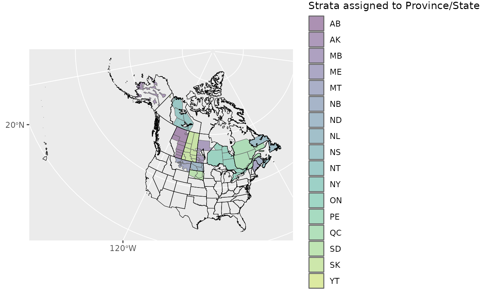
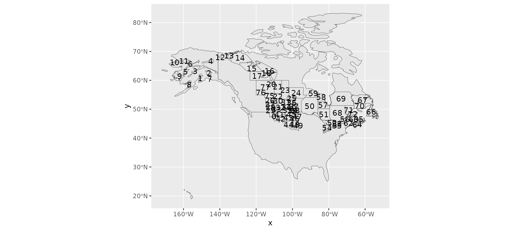
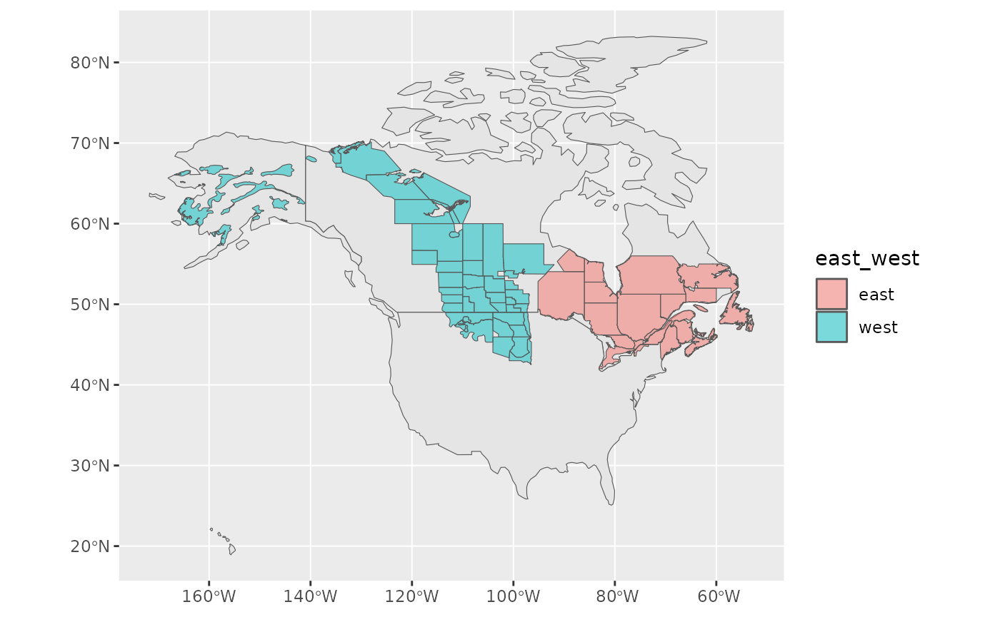
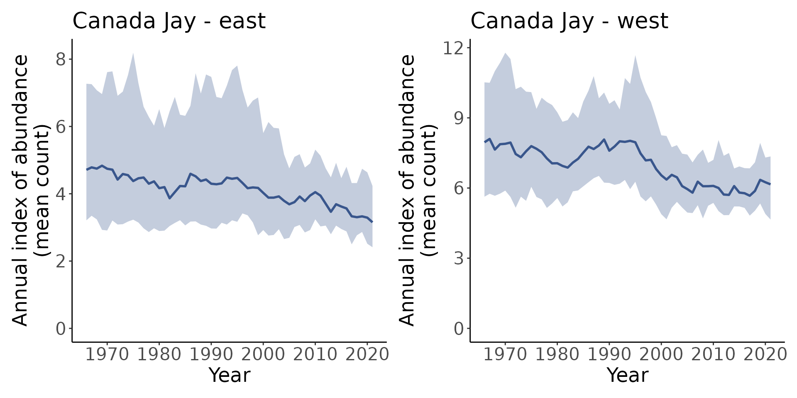
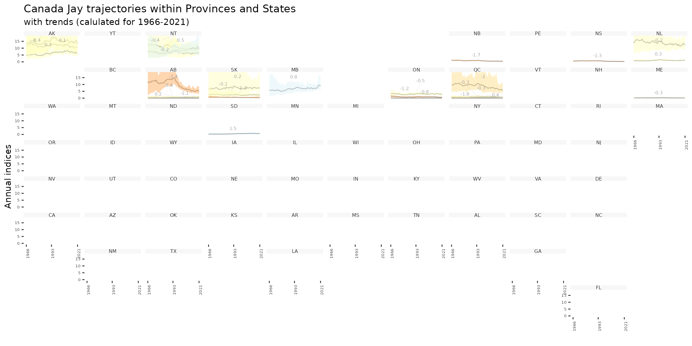

Custom Stratifications
Source:vignettes/articles/custom_stratification.Rmd
custom_stratification.RmdThe Stratification vignette
covers how to stratify your data using existing or custom
stratifications. Here we will explore how to use custom stratifications
in later steps, such as generate_indices().
Setup
First, we’ll load the packages we need.
library(bbsBayes2)
library(sf) # Spatial data manipulations
library(dplyr) # General data manipulations
library(ggplot2) # PlottingThen make sure you have the BBS data downloaded
have_bbs_data()
#> Expected BBS state data 2022: '/home/runner/.local/share/R/bbsBayes2/bbs_state_data_2022.rds'
#> [1] TRUEIf not, install with fetch_bbs_data()
Preparing the data and running the model
We’ll start with a custom stratification example we used in the original Stratification vignette. First we need a spatial data object with polygons defining the strata.
We’ll use WBPHS stratum boundaries for 2019. This is available from available from the US Fish and Wildlife Service Catalogue: https://ecos.fws.gov/ServCat/Reference/Profile/142628
You can either download it by hand, or with the following code.
z <- "WBPHS_stratum_boundaries_2019.zip"
download.file(url = "https://ecos.fws.gov/ServCat/DownloadFile/213149",
destfile = z)
unzip(z) # Unzip
unlink(z) # Remove the zipped fileWe’ll load and prepare this data.
And stratify our data!
s <- stratify(by = "WBPHS_2019", species = "Canada Jay", strata_custom = map)
#> Using 'wbphs_2019' (custom) stratification
#> Loading BBS data...
#> Filtering to species Canada Jay (4840)
#> Stratifying data...
#> Preparing custom strata (EPSG:4326; WGS 84)...
#> Summarizing strata...
#> Calculating area weights...
#> Joining routes to custom spatial data...
#> Renaming routes...
#> Omitting 100,155/119,567 route-years that do not match a stratum.
#> To see omitted routes use `return_omitted = TRUE` (see ?stratify)See the Stratification vignette for more details regarding the
stratify()step.
Once stratified, the next couple of steps are the same, regardless of whether we’re using a custom stratification or not.
p <- prepare_data(s)Prepare and run the model (note this is not an appropriate model, as we’re aiming for speed rather than accuracy).
m <- prepare_model(p, model = "first_diff") %>%
run_model(chains = 2, iter_sampling = 20, iter_warmup = 20)
#> One set of `init` values supplied, duplicating for each chain.
#> Running MCMC with 2 chains, at most 4 in parallel...
#>
#> Chain 1 WARNING: There aren't enough warmup iterations to fit the
#> Chain 1 three stages of adaptation as currently configured.
#> Chain 1 Reducing each adaptation stage to 15%/75%/10% of
#> Chain 1 the given number of warmup iterations:
#> Chain 1 init_buffer = 3
#> Chain 1 adapt_window = 15
#> Chain 1 term_buffer = 2
#> Chain 1 Iteration: 1 / 40 [ 2%] (Warmup)
#> Chain 2 WARNING: There aren't enough warmup iterations to fit the
#> Chain 2 three stages of adaptation as currently configured.
#> Chain 2 Reducing each adaptation stage to 15%/75%/10% of
#> Chain 2 the given number of warmup iterations:
#> Chain 2 init_buffer = 3
#> Chain 2 adapt_window = 15
#> Chain 2 term_buffer = 2
#> Chain 2 Iteration: 1 / 40 [ 2%] (Warmup)
#> Chain 1 Informational Message: The current Metropolis proposal is about to be rejected because of the following issue:
#> Chain 1 Exception: neg_binomial_2_log_lpmf: Precision parameter is 0, but must be positive finite! (in '/tmp/RtmpfAaVyg/model-240462c07906.stan', line 227, column 3 to column 40)
#> Chain 1 If this warning occurs sporadically, such as for highly constrained variable types like covariance matrices, then the sampler is fine,
#> Chain 1 but if this warning occurs often then your model may be either severely ill-conditioned or misspecified.
#> Chain 1
#> Chain 2 Informational Message: The current Metropolis proposal is about to be rejected because of the following issue:
#> Chain 2 Exception: neg_binomial_2_log_lpmf: Log location parameter[1] is -inf, but must be finite! (in '/tmp/RtmpfAaVyg/model-240462c07906.stan', line 227, column 3 to column 40)
#> Chain 2 If this warning occurs sporadically, such as for highly constrained variable types like covariance matrices, then the sampler is fine,
#> Chain 2 but if this warning occurs often then your model may be either severely ill-conditioned or misspecified.
#> Chain 2
#> Chain 1 Iteration: 21 / 40 [ 52%] (Sampling)
#> Chain 2 Iteration: 21 / 40 [ 52%] (Sampling)
#> Chain 1 Iteration: 40 / 40 [100%] (Sampling)
#> Chain 1 finished in 115.0 seconds.
#> Chain 2 Iteration: 40 / 40 [100%] (Sampling)
#> Chain 2 finished in 119.3 seconds.
#>
#> Both chains finished successfully.
#> Mean chain execution time: 117.2 seconds.
#> Total execution time: 119.5 seconds.
#> Saving model output to /home/runner/work/bbsBayes2/bbsBayes2/vignettes/articles/BBS_STAN_first_diff_hier_2023-01-20.rdsLooking at indices and trends
Now we can start to look at the indices and trends related to our model.
generate_indices() creates indices at different regional
levels. By default these are “continent” and “stratum”, but you can add
“prov_state”, “bcr”, “bcr_by_country” (where appropriate). You can also
create your own regional divisions and provide them as a
regions_index data frame.
For example, let’s imagine we would like to calculate regional indices for each stratum, country, province/state, as well as for a custom division of east vs. west.
First we’ll need to tell the function which strata belong to which province or state, and then which belong to the ‘east’ and which to the ’west.
We’ll start by using a helper function
assign_prov_state(). This function takes a map of strata
and assigns each strata to a province or state depending on the amount
of overlap. By default it will warn if the amount of overlap is less
than 75%, but in this case, we will lower that cutoff to 60%. The plot
gives us a chance to make a quick assessment of whether we’re happy with
how the various strata have been assigned.
rindex <- assign_prov_state(map, min_overlap = 0.6, plot = TRUE)
Next we’ll define the east/west divide by hand. If we plot the strata by name, we can pick out which are eastern and which western.
ggplot(rindex) +
geom_sf(data = load_map(type = "North America")) +
geom_sf() +
geom_sf_text(aes(label = strata_name))
#> Warning in st_point_on_surface.sfc(sf::st_zm(x)): st_point_on_surface may not
#> give correct results for longitude/latitude data
It’s a bit hard to see, but looks like strata < 50 and greater than 74 are in the east and the rest are in the west.
Let’s add a column specifying these categories
rindex <- mutate(
rindex,
east_west = if_else(as.numeric(strata_name) < 50 | as.numeric(strata_name) > 74,
"west",
"east"))And now double check!
ggplot(data = rindex) +
geom_sf(data = load_map(type = "North America")) +
geom_sf(data = rindex, aes(fill = east_west), alpha = 0.5)
Now we’ll create our indices and trends
i <- generate_indices(
m,
regions = c("stratum", "country", "prov_state", "east_west"),
regions_index = rindex)
#> Processing region stratum
#> Processing region country
#> Processing region prov_state
#> Processing region east_west
t <- generate_trends(i)We can plot each of these indices with plot_indices()
which creates a list of plots.
p <- plot_indices(i)
names(p)
#> [1] "1" "14"
#> [3] "17" "18"
#> [5] "2" "22"
#> [7] "23" "24"
#> [9] "26" "3"
#> [11] "31" "44"
#> [13] "50" "51"
#> [15] "52" "56"
#> [17] "62" "63"
#> [19] "64" "66"
#> [21] "67" "68"
#> [23] "69" "71"
#> [25] "72" "75"
#> [27] "76" "77"
#> [29] "Canada" "United_States_of_America"
#> [31] "AB" "AK"
#> [33] "MB" "ME"
#> [35] "NB" "NL"
#> [37] "NS" "NT"
#> [39] "ON" "QC"
#> [41] "SD" "SK"
#> [43] "east" "west"
library(patchwork)
p[["east"]] + p[["west"]]
Finally we can even create geofaceted plots (which is only possible in our case because we assigned our strata to Provinces and States and calculated indices for these regions).
plot_geofacet(i, trends = t, multiple = TRUE)
And that is how you can use a custom stratification from start to finish. Enjoy!